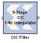

Cascaded integrator-comb (CIC) filters are multirate filters used for realizing large sample rate changes in digital systems. Both decimation and interpolation structures are supported. CIC filters contain no multipliers; they consist only of adders, subtractors and registers. They are typically employed in applications that have a large excess sample rate; that is, the system sample rate is much larger than the bandwidth occupied by the signal. CIC filters are frequently used in digital down-converters and digital up-converters.
Implementation details are provided in the filter design subsystems. To read the annotations, place the block in a model, then right-click on the block and select
Explore from the popup menu. Double click on one of the sub-blocks to open the sub-block model and read the annotations.
As seen in the two figures below, the CIC filter cascades N integrator sections together with N comb sections. To keep the integrator and comb structures independent of rate change, a rate change block (i.e., an up-sampler or down-sampler) is inserted between the sections. In the interpolator, the up-sampler causes a rate increase by a factor of R by inserting R-1 zero-valued samples between consecutive samples of the comb section output. In the decimator, the down-sampler reduces the sample rate by a factor of R by taking subsamples of the output from the last integrator stage.
E. B. Hogenauer. An economical class of digital filters for decimation and interpolation. IEEE Transactions on Acoustics, Speech and Signal Processing, ASSP- 29(2):155{162, 1981